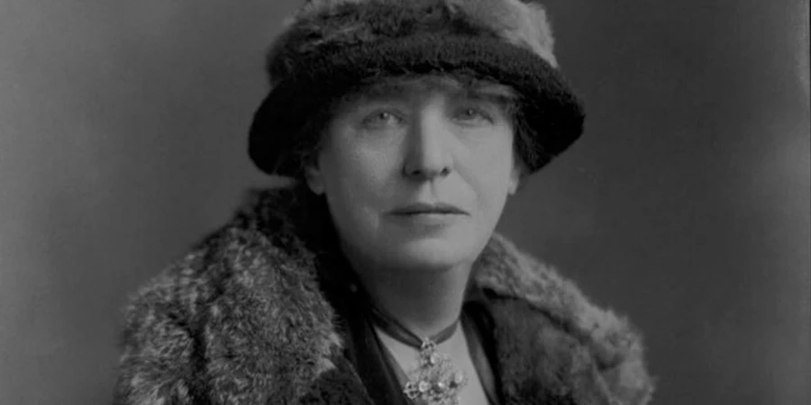

Oque é Coraline?
Coraline é um Livro/Animação com muita magia, imaginação e Terror.

Como foi Inspirado?
Lucy Lane Clifford nasceu em 1846, poucos anos depois do início do longevo reinado da rainha Vitória.

Em uma época difícil para uma mulher se sustentar sozinha, George Eliot foi uma das várias pessoas que contribuíram para uma pequena pensão organizada para sustentar Lucy Clifford e suas duas filhas.
Eliot, que se tornou amiga de Lucy Clifford, a encorajou a encontrar conforto na escrita.Como uma forma de complementar sua renda, Clifford começou a escrever resenhas para a revista Standard.
Seus primeiros trabalhos publicados eram voltados ao público infantil, mas ela também escreveu romances, coletâneas e peças de teatro.
Sua primeira publicação, Mrs
Keith's Crime, não foi assinada com seu nome, o que só aconteceu no trabalho seguinte. Lucy não teve medo de explorar outros gêneros e formatos e tornou-se uma referência para vários outros autores da época, incluindo nomes como Thomas Hardy.
Muito do que se sabe é fruto das palavras daqueles que conviveram e se encantaram por sua personalidade e presença.
Henry James, autor do período vitoriano e amigo íntimo de Clifford, queimou seus documentos antes de morrer, nos impossibilitando de ter acesso ao lado de Lucy que ele tanto elogiava nas cartas que trocavam.
Lucy Clifford morreu em abril de 1929 e quase cem anos depois de sua morte, seu trabalho continua inspirando adaptações e sendo redescoberto por novas gerações.
Sinopse
Entediada em sua nova casa, Caroline Jones (Dakota Fanning) um dia encontra uma porta secreta. Através dela tem acesso a uma outra versão de sua própria vida, a qual aparentemente é bem parecida com a que leva. A diferença é que neste outro lado tudo parece ser melhor, inclusive as pessoas com quem convive. Caroline se empolga com a descoberta, mas logo descobre que há algo de errado quando seus pais alternativos tentam aprisioná-la neste novo mundo.